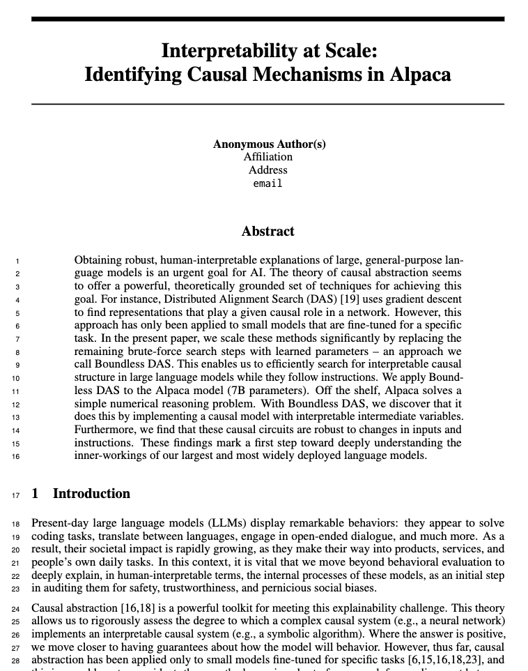
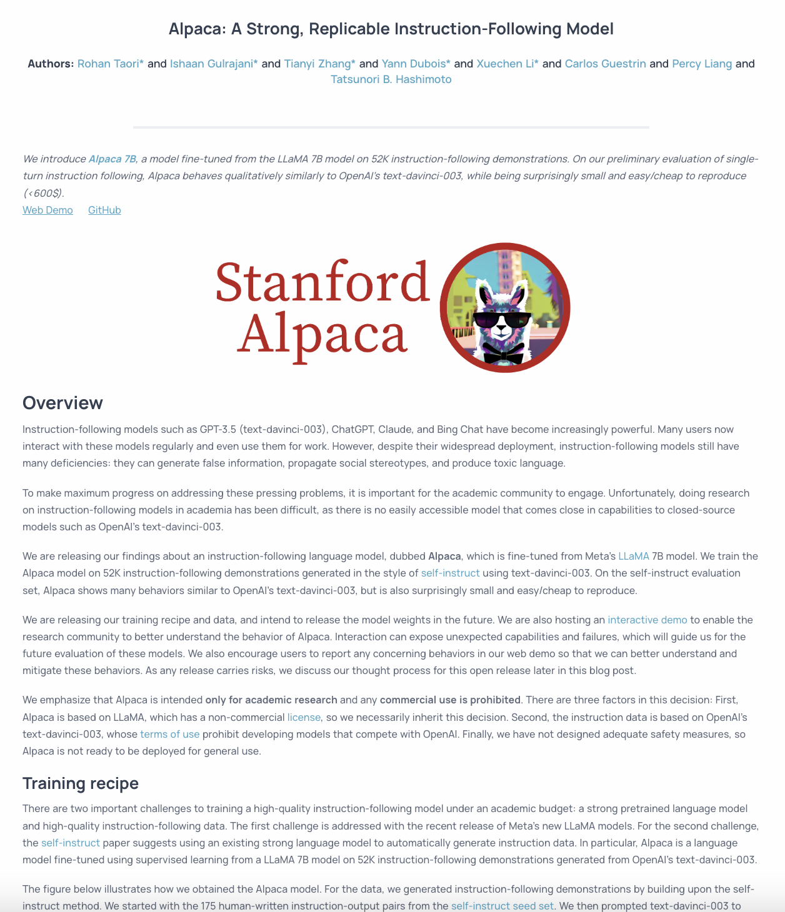
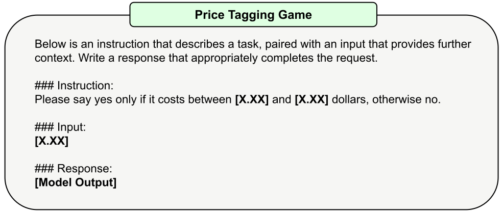
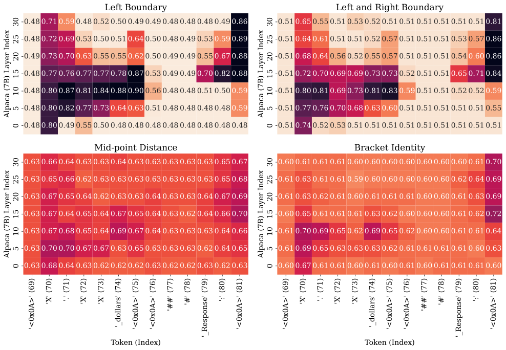
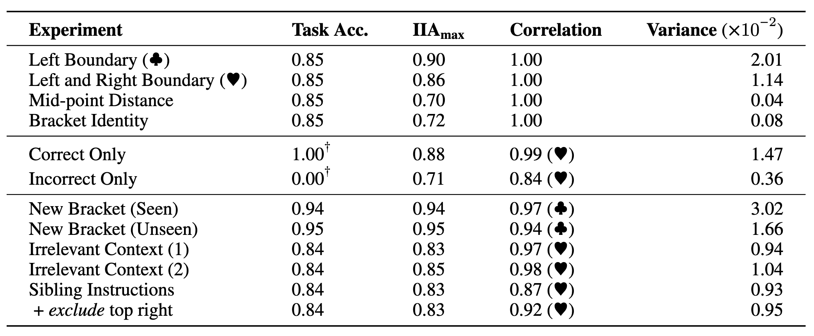
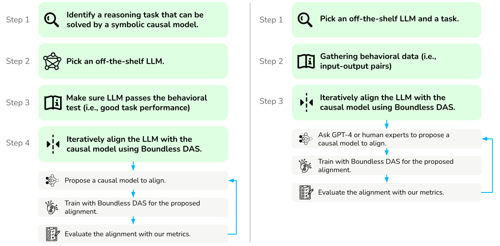

解释大语言模型:
在 Alpaca 中识别因果机制

ArXiv
文章

Github
源代码

Alpaca
模型

English
Blog
如何在大语言模型中寻找因果机制?
现有的可解释性工具在数亿参数语言模型上通常无法适配，因为它们往往专注于为特定任务微调的小型模型。在本文中，我们提出了一种基于因果抽象 (causal abstraction) 理论的新方法，以找到在模型中扮演给定因果角色的隐藏表达 (hidden representation)。通过使用我们的工具，我们发现Alpaca模型在解决简单的数字推理任务时实现了具有可解释中间变量的因果模型。此外，我们发现这些因果模型对于输入和指令的变化具有鲁棒性 (robustness)。我们的因果机制发现框架是通用的，并且可以适用于拥有数十亿参数的大语言模型。

在这个图中，Alpaca模型被要求解决我们的价格标签游戏,
"如果成本（Z）在 2.00（X）和 3.00（Y）美元之间，则回答是，否则回答否。"
在上图的顶部，我们有一个因果模型，通过两个布尔变量 (boolean variable) 确定输入金额是否在下限以上和上限以下来解决这个问题。在这里，我们尝试对齐第一个布尔变量。为了训练对齐，我们抽取两个训练样例，然后交换它们之间的中间布尔值以使用我们的因果模型生成一个反事实 (counterfactual) 的输出。同时，我们使用建议对齐的神经元交换这两个样例之间的激活。最后，我们训练我们的旋转矩阵，使得我们的神经网络的行为与因果模型产生相同的反事实结果。
为什么我们要扩展 (Scale) 因果机制发现?
获取大型通用语言模型的具有鲁棒性的、易于理解的解释是人工智能领域的重要目标。目前的工具存在以下主要限制：
- 搜索空间太大: LLM具有数十亿的参数，序列表示随长度增加而增加。神经元的搜索空间通常太大，无法使用任何启发式搜索工具。
- 表达是分布式的: LLM中单个神经元的激活与概念 (concept) 之间的映射通常是多对多而不是一对一的。先前的工作声称一组神经元表示一个简单的概念（例如性别），可能是虚假的，因为神经元可以编码更复杂的内容（例如多个概念的叠加）。
- 零鲁棒性: 以前的工作中找到的因果机制通常假设为特定任务微调的模型，甚至带有固定长度输入和固定模板。我们不确定这些对齐是否具有泛化性，如果具有泛化性，泛化程度如何。
将分布式因果机制的寻找转化为优化问题
我们将我们最近提出的分布式对齐搜索（DAS) [2] 调整为将对齐过程转化为一个优化问题。在DAS中，我们使用梯度下降方法找到高层模型和低层模型之间的对齐，而不是进行暴力搜索，并且通过分析非标准基的表示形式-分布式表示，我们允许单个神经元扮演多个不同的角色。

这张图（从原始论文中复制）展示了一个分布式互换干预的例子，当训练DAS时使用。它显示了我们第一张图中旋转矩阵训练过程的放大版本。基本上，我们对所有输入进行正向传递，并在我们要对齐的表示形式上应用一个可学习的旋转矩阵。然后，我们在旋转后的空间中进行干预，以对齐我们高层因果模型预测的反事实行为。
在本文中，我们通过用学习参数替换剩余的暴力搜索步骤，大幅度扩展这些方法，提出了DAS的更新版本 Boundless DAS 。以下是一些关键优势：
- 将搜索转化为优化问题: 通过在旋转空间中进行干预，我们现在只需要检查是否可以学习一个忠实的旋转矩阵（有关我们的忠实度统一度量，请参见下一节），以评估所提出的对齐方法。
- 子空间对齐: 我们的旋转矩阵是正交矩阵，它是正交规范的。旋转后的每个维度都是原始维度的线性组合。在正交化表示中，每个维度都是独立的，这对于我们假设中间变量是独立的很有用。
Boundless DAS 代码
Boundless DAS是适用于任何模型的通用方法。这里我们展示了一个通用的解码器 (decoder-only) LLM的伪代码片段。

统一的评估方式
我们使用前几篇因果抽象工作中提出的互换干预准确率 (Interchange Intervention Accuracy; IIA) [3] [4]来评估我们在旋转子空间中对齐的准确性或忠实度。IIA越高，对齐就越好。这里是一个非常简单的算术任务 (a + b) * c 的示例,

在这个问题中，如果我们有这四个神经元与代表 (a + b) 的中间变量完美对齐，那么可以确定性地从一个输入 (1 + 2) * 3中取出这四个神经元的激活，并将它们插入到另一个输入 (2 + 3) * 4中，使模型输出 (1 + 2) * 4 = 12。我们称这种情况为完美对齐，IIA为100%。我们使用相同的指标评估在旋转子空间中的对齐情况。
需要注意的是，对于Boundless DAS，IIA的含义略有变化: 在旋转子空间中达到100％的IIA，意味着对齐的因果变量在原始表示中分布为100％。我们还可以反向工程学习到的旋转矩阵，以回推每个原始维度的权重。
一个简单的数字推理任务
我们首先构建了一个简单的数字推理任务，Alpaca模型可以相当容易地解决。

这个定价标签游戏基本上包含三个部分: (1) 左括号; (2) 右括号; 和 (3) 输入金额。有几种直观的因果模型可以完美地解决这个任务。

我们的中心研究问题是: Alpaca模型在解决这个任务时是否遵循了这些因果模型之一？我们试图通过找到标记为红色的中间因果变量的对齐方式来回答这个问题。
主要结果: 模型遵循哪一种因果机制?
我们在任务的多个层和位置上使用Boundless DAS训练了每一个单词 (token) 的隐性表达，并在保留的测试集上评估了我们学习到的对齐方式，在我们的隐藏测试数据集中得到了IIA分布。下面是我们考虑的所有四个高级因果模型的对齐结果。
在这里，我们通过将上限设置为任务性能，将下限设置为虚拟分类器的模型性能来对IIA进行归一化。显然，涉及左边界和右边界检查的因果模型要明显更可靠。我们的研究结果表明，Alpaca模型在内部计算这些布尔变量来表示输入金额与括号之间的关系。主要结果: 找到的因果机制是否具有鲁棒性?
现在对于大模型的可解释性或者机制解释性 (mechanistic interpretability) 的方法的主要诟病是找到的可解释性的结果可能仅适用于特定的输入-输出对设置。在本文中，我们试图通过探寻找到的可解释性是否具有很好的鲁棒性。我们在不同的输入-输出设置的情况下无训练 (inference-time only) 的看发现的因果作用（即对齐方式）是否得到保留。这是至关重要的，因为它告诉我们因果模型在神经网络中的实现是否具有鲁棒性。我们研究了三种设置：- 新的输入: 在测试的时候，我们改变了问题中的最大和最小值。
- 插入无关的信息: 我们在测试时注入随机上下文以评估对齐方式。
- 整个指令的改写: 我们为指令 "说是……，否则不" 训练对齐方式，并查看它们是否推广到指令 "说真……，否则假"。

表格里的数据是我们实验的总结结果，任务性能作为准确率（Task Acc.; 在[0.00，1.00]之间），在所有位置和层中的最大互换干预准确率（IIA; 在[0.00，1.00]之间），两个分布之间的IIA的Pearson相关性（在[-1.00，1.00]之间），以及单个实验中所有位置和层的IIA方差。我们的研究结果表明，在这些设置中找到的对齐方式具有鲁棒性。可解释性的愿景
自动因果机制发现（机制解释性）不是一个简单的任务，其中有许多移动部分。在本文中，我们通过提出一种改进的方法，向这个目标迈出了一步。
在上图的左侧插图，我们的提议范例有四个中心步骤，其中最后一步包括一个迭代过程来寻找更好的对齐方式。这个范例解决了当前系统提出的一系列限制，但还有很多工作要做。在右侧插图中，我们展示了一个我们未来想要实现的中间目标，即用GPT-4或人类专家在环过程替换我们的确定性高级模型。局限性讨论
我们的工作是朝着理解LLMs的内部因果机制迈出的第一步。它具有局限性，并可能在这个方向上开启一条工作线。- 更大的规模: 我们希望我们的框架可以应用于研究最强大的LLMs（例如175B的GPT-3或GPT-4）在发布时，因为当前的工作仍然集中在一个简单的推理任务上，较小的LLMs可以解决。
- 确定的因果模型: 我们的工作依赖于先验已知的因果模型，在许多实际应用中这是不现实的，因为高级因果模型也是隐藏的。未来的工作可以通过基于启发式的离散搜索或甚至端到端优化来研究学习因果图的方法。
- 最终的可扩展性: 我们方法的可扩展性仍然受到搜索空间隐藏维度大小的限制。现在无法在LLMs的一组令牌表示上进行搜索，因为随着隐藏维度的增长，旋转矩阵呈指数增长。
- 没有确凿的答案: 我们的评估范例可以根据IIA提出对齐方式（即灰盒），但无法对失败的对齐方式进行确定性推断。
引用本文
这项工作仅为预印本。可以按以下方式引用。
bibliography
Zhengxuan Wu, Atticus Geiger, Christopher Potts, and Noah Goodman. "Interpretability at Scale: Identifying Causal Mechanisms in Alpaca." Ms. Stanford University (2023).
bibtex
@article{wu-etal-2023-Boundless-DAS,
title={Interpretability at Scale: Identifying Causal Mechanisms in Alpaca},
author={Wu, Zhengxuan and Geiger, Atticus and Potts, Christopher and Goodman, Noah},
year={2023},
eprint={xxxx.xxxxx},
archivePrefix={arXiv},
primaryClass={cs.LG}
}